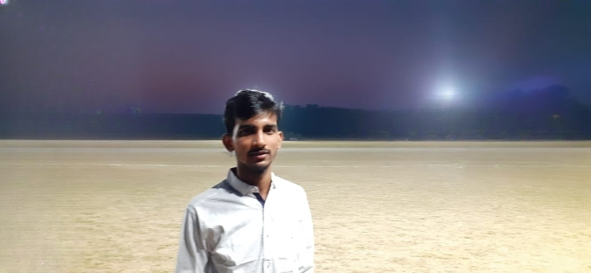

I am a final year student in an integrated M.Sc. program in Physics at S.V. NIT Surat. My current interest lies in the field of Quantum Foundation and Relativistic Quantum Mechanics, understanding the fundamental ingredients such as mass, time, charge and symmetries of nature.
The work deals with the objectives of reviewing the transition of a dynamical variable into an operator, providing insights into observable-unobservable correspondence,and finally presents that there exists a complement form of the Born-Jordan quantum condition. Report
A pedagogical report (52 pages) on the three pictures (dynamical methods) of quantum physics, with the necessary inclusion of classical formulations and old quantum mechanics. Which is specifically written in \texttt{ Hindi}, making it helpful for those who are eager to understand quantum dynamics and its evolutionary history in a nutshell. Report
In this work, we have considered the statics of two non-neutral bodies unaffected by external force fields. As a part of independent research, certain assumptions were made for solving the required problems. Through one of its results, it was revealed that nature gives double preference to a system that has a heavier object at the centre of a positive charge over another negatively charged body. e-Print
It aims to deal with the dynamics of two neutral bodies of distinct densities under its gravitational attraction. The abosulte union is a devised process concerning the complete merger of the solid body into a larger fluid spherical body without the action of any external force in space.
The five weeks internship was designed to train candidates for modern web designing while keeping a sharp focus on real-world web development requirements. Learning included the use of HTML5, CSS3 and JavaScript frameworks. I successfully executed the project by framing a basic E-commerce portal. Certificate